채널: 레디포그로스 (Ready For Growth) | 길이: 16:43 | 날짜: 2026-02-19
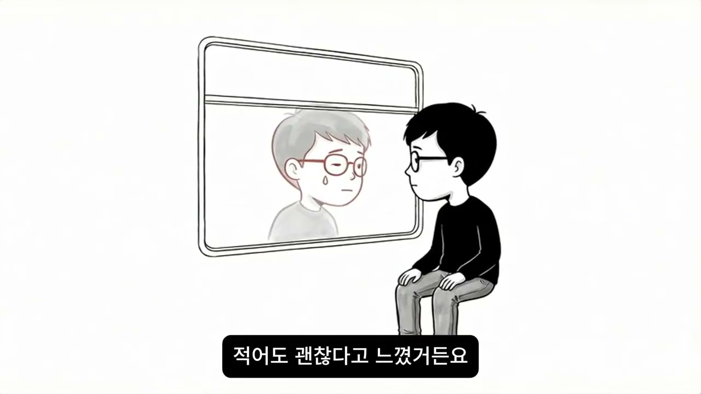
화자는 “괜찮아요라고 말했고, 그 순간엔 실제로도 괜찮았던 것 같았다”는 역설로 시작한다. 그런데 집에 오는 길, 버스 창문에 비친 자기 얼굴을 보는 순간 감정이 올라오고 눈물이 난다고 말한다.
시각적으로는 캐릭터가 창문/거울 같은 반사면 앞에 앉아 있고, 반사된 자아에는 눈물 표시가 붙어 있어 ‘사회적 표정과 내면 상태의 분리’를 즉시 보여준다. 또한 “ANFJ(문맥상 INFJ 맥락)” 언급과 함께 아침부터 사람들 얼굴을 떠올리는 장면 설명이 붙어, 하루의 시작 자체가 대인감정 예측 모드임을 강조한다.
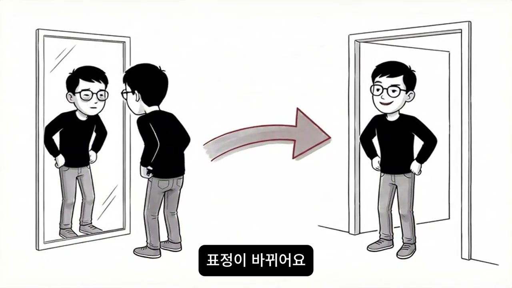
화자는 알람을 끄기 전부터 관계 점검이 시작된다고 말한다: 답장이 짧았던 사람, 표정이 안 좋았던 동료, 연락 뜸한 친구. 즉 침대에서 일어나기도 전에 머릿속에서는 사회적 신호 해석이 가동된다.
이미지에는 우울한 실루엣 인물 옆에서 주인공이 전신으로 귀 기울이는 장면과 영어 문구 “ABSORBING THE UNEXPRESSED FEELINGS… LISTENING WITH MY WHOLE BEING.”이 나타난다. 말하지 않은 감정까지 흡수한다는 메시지를 시각적으로 선명하게 만든다.
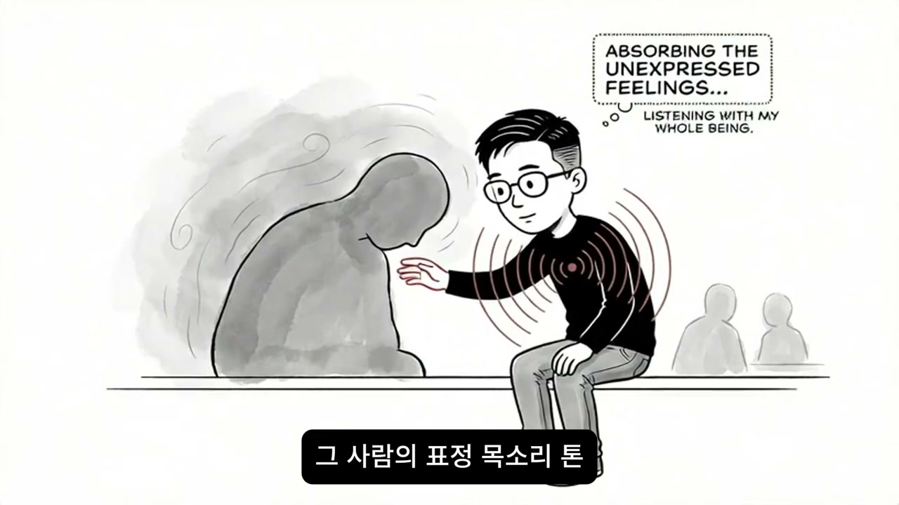
대화 전 머릿속 계산은 “솔직히 말하면 분위기가 어떻게 될까, 상대가 감당할 수 있을까”로 전개되고, 계산이 끝나기 전에 입이 먼저 “나 괜찮아”를 선택한다고 설명한다. 점심시간에는 타인의 표정·목소리·톤·침묵까지 읽으며 진심으로 위로하지만, 돌아서면 무게가 남는다고 말한다.
이미지에서는 거울 앞 무표정에서 문을 나서는 미소 표정으로 전환되는 장면과 화살표가 보인다. 이는 ‘내 감정 확인 → 사회적 얼굴 장착’의 자동화 과정을 단순하지만 강하게 드러낸다.
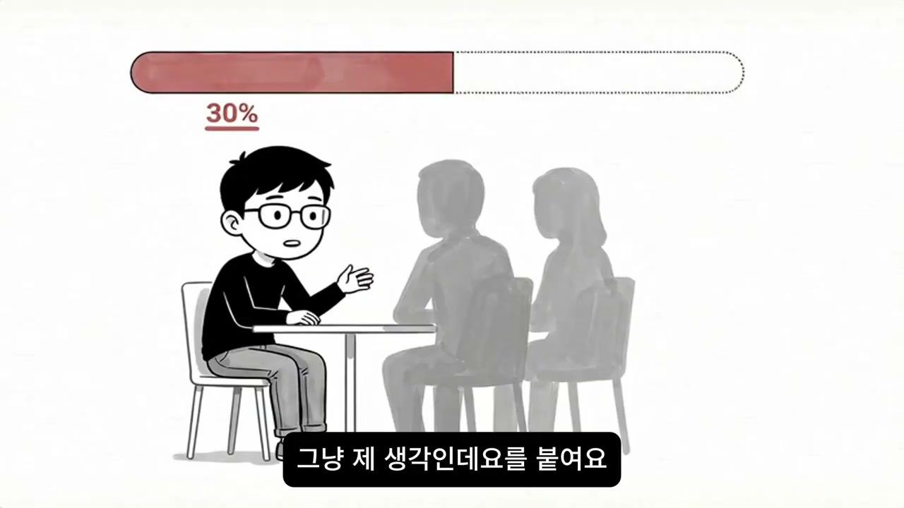
회의에서 하고 싶은 말은 이미 정리돼 있어도, “팀 분위기 어색해질까?”를 계산하며 문장을 줄이고 톤을 낮춘 뒤 “그냥 제 생각인데요?”를 덧붙이는 자기검열을 설명한다. 결과는 하고 싶던 말의 30%만 밖으로 나간 느낌이다.
화면 상단에는 분홍색 진행바와 “30%”가 명시되고, 회의 테이블의 회색 실루엣 동료 앞에서 발화하는 캐릭터가 보인다. 숫자와 도식으로 자기표현 축소를 정량화한 장면이다.
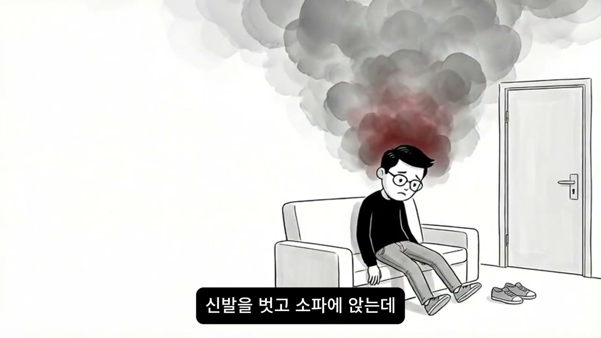
퇴근 후 이어폰을 꽂아도 낮의 대화가 머리에서 재생되고, 이미 지나간 장면을 계속 편집·검토하게 된다고 말한다. 집 문을 닫고 혼자가 되는 순간, 낮에 눌러둔 것들이 한꺼번에 올라오며 “밖에서는 잘 웃었는데 왜 혼자면 무너지나”라는 질문으로 이어진다.
이미지에서는 소파에 주저앉은 인물 위로 검은 연기(붉은 중심)가 몰려 있고, 현관문·벗어둔 신발이 보인다. ‘외부 자극 차단 직후 내부 정서 폭발’을 공간적으로 표현한다.
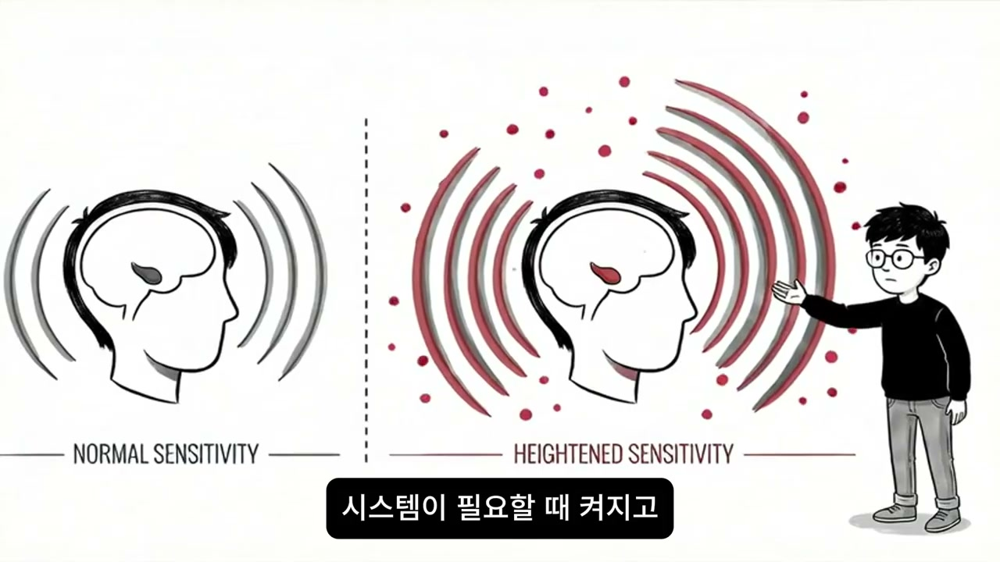
화자는 편도체를 감정·위험을 감지하는 경보 시스템으로 소개한다. 미래 시뮬레이션 중심 사고가 강한 뇌에서는 이 시스템의 감도가 높아 타인의 미세한 신호를 더 많이, 더 깊게 수신한다고 말한다.
이미지에서는 인물 주위로 들어오는 회색 구름과 가슴 부위의 붉은 반응점이 강조된다. 이는 외부 신호가 신체 반응으로 바로 번역되는 과정을 암시한다.
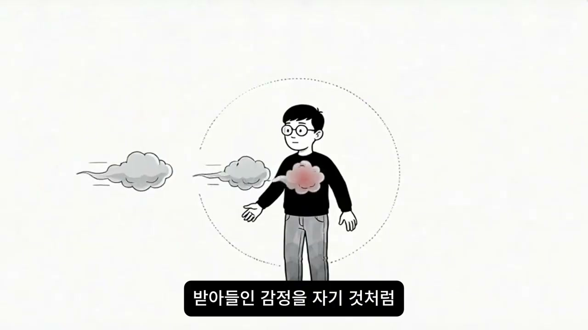
회의 전 상대 반응을 먼저 시뮬레이션하는 것, 점심에 동료 감정이 내 몸의 긴장으로 남는 것 모두 같은 시스템 작동으로 설명된다. 문제는 수신만이 아니라 받아들인 감정을 자기 것으로 처리한다는 점이다.
이미지에는 “NORMAL SENSITIVITY” vs “HEIGHTENED SENSITIVITY” 비교 도식이 있고, 오른쪽(고감도)에서 파장·붉은 점·편도체 강조가 커진다. 즉 “예민함”을 감정 센서의 증폭으로 시각화한다.
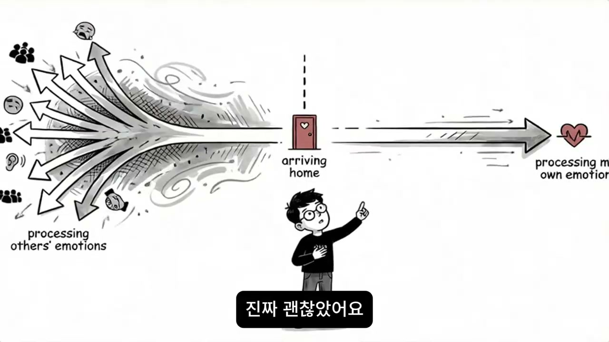
“괜찮아요”는 거짓말이 아니라 그 순간의 진실이었다는 재정의가 나온다. 당시에는 편도체가 바깥 감정 처리로 바빠 자기감정을 읽을 여유가 없었고, 혼자가 된 뒤에야 내 감정 접수가 시작됐다는 설명이다.
이미지에는 왼쪽의 복잡한 다중 화살표(processing others’ emotions)와 중앙의 작은 문(arriving home), 오른쪽의 단일 화살표(processing my own emotions)가 대비된다. 핵심은 처리 순서의 지연이다.
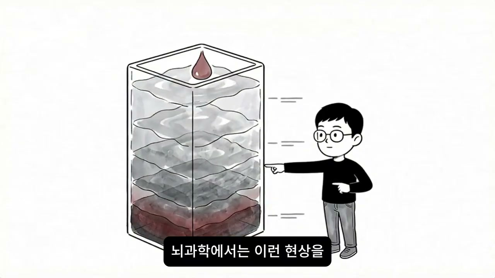
화자는 반복 구조의 핵심 질문을 던진다: 바깥에서는 괜찮고 집에서만 무너지는 상태가 계속되면 뇌에는 무슨 일이 생기나. 답은 “감정은 처리되지 않으면 사라지지 않고 감정기억 시스템에 미처리 항목으로 쌓인다”이다.
이미지는 층층이 쌓인 투명 용기 형태로, 아래쪽 붉은층(누적된 정서), 위쪽 한 방울(새 입력)이 표현된다. 작은 입력이 임계치에 기여하는 누적 구조를 상징한다.
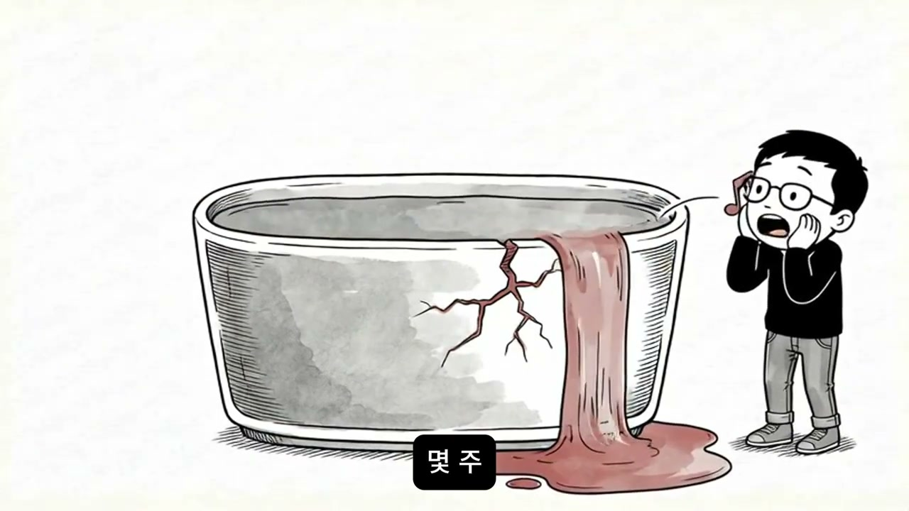
드라마, 노래, 사소한 친절에 갑자기 울컥하는 현상은 “오늘 일”이 아니라 며칠·몇 주·몇 달 누적된 미처리 감정의 분출로 해석된다. 화자는 뇌가 더 이상 안고 있지 못해 틈이 생기는 순간 밖으로 밀어낸다고 설명한다.
이미지에는 금 간 용기에서 붉은 액체가 넘쳐흐르는 도식이 등장한다. 압력 누적-파열-유출의 물리 비유로 정서 폭발을 설명한다.
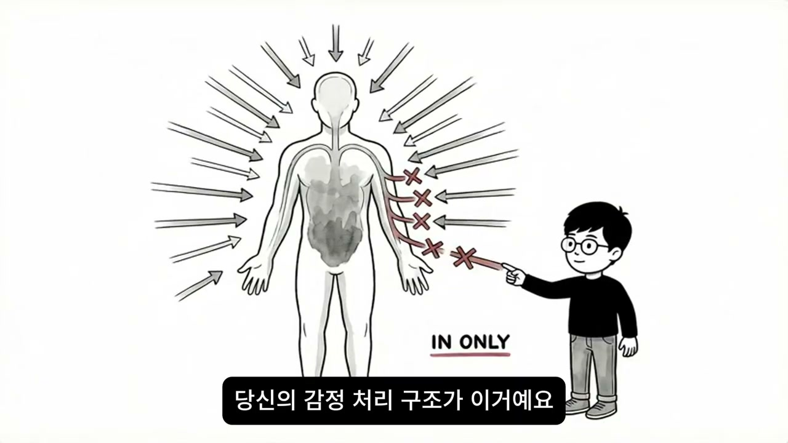
여기서 영상의 핵심 비유가 완성된다: 창문은 많지만 환기가 안 되는 방. 외부 공기(타인 감정)는 잘 들어오는데, 내부 공기(내 감정)는 나가지 못하는 구조가 바로 현재의 감정 처리 구조라는 것이다.
이미지에 인체 실루엣으로 들어오는 화살표가 다수, 나가는 경로는 X표로 막혀 있고 “IN ONLY” 텍스트가 있다. “수신은 고감도, 배출은 봉쇄”를 한 컷으로 압축한다.
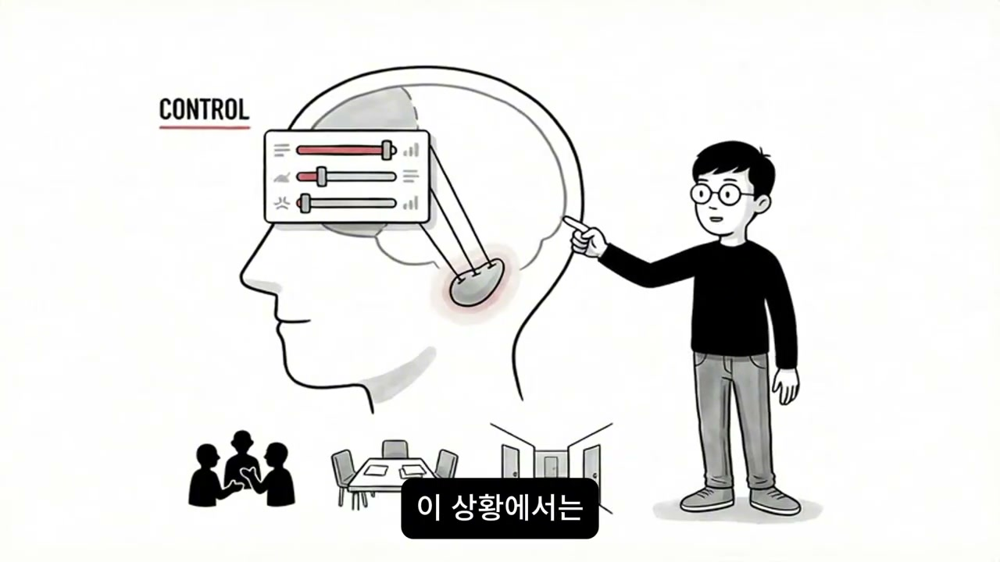
전두엽은 판단·선택·조절을 담당하며, 바깥 상황에서 “지금은 참고 나중에 처리” 같은 결정을 지속적으로 내린다고 설명한다. 문제는 집에 오면 이 조절 시스템이 에너지 고갈로 약해져 억제가 풀린다는 점이다.
이미지에는 머리 단면과 “CONTROL” 슬라이더 UI가 겹쳐져 있고, 하단에 대인관계/회의/현관 아이콘이 배치된다. 이는 맥락별로 전두엽이 감정 강도를 실시간 조절한다는 메시지다.
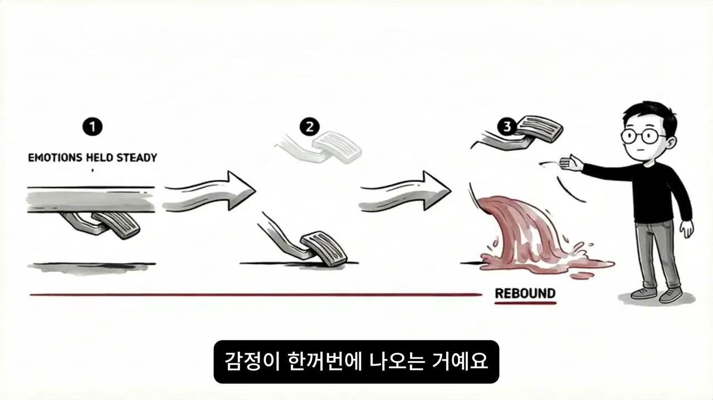
화자는 “감정 조절을 못해서 무너지는 게 아니라, 하루 종일 너무 잘 조절했기 때문에 밤 반동이 온다”고 말한다. 즉 낮에는 브레이크를 계속 밟고, 밤에 브레이크가 풀리며 한꺼번에 나온다.
이미지는 3단계 브레이크 페달 도식과 “REBOUND”가 명시돼 있다. 억제-해제-분출의 순서를 기계적 모델로 제시해 이해를 돕는다.
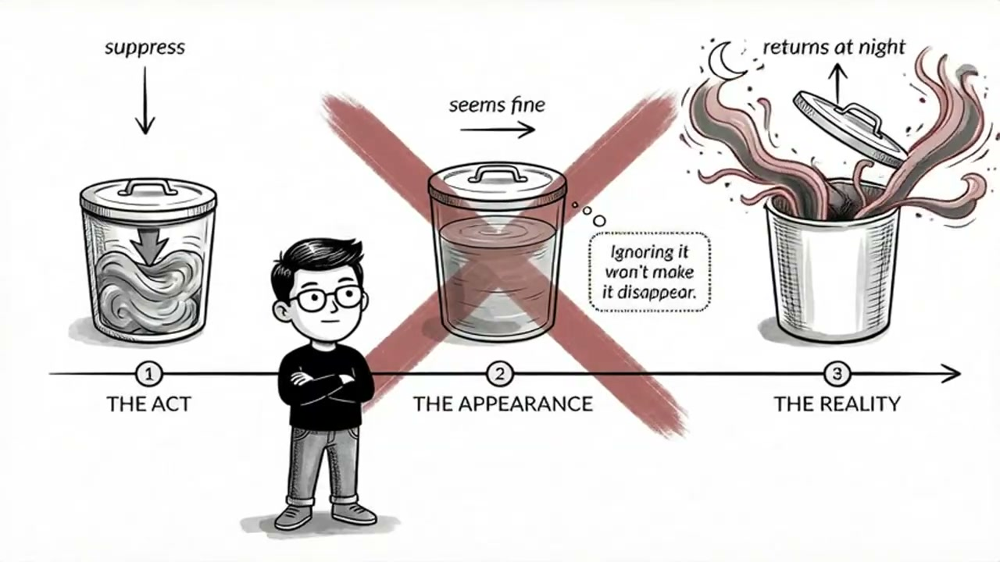
“참으면 지나간다” 전략이 실제로 감정을 가볍게 만들었는지 반문한다. 화자는 대부분 그렇지 않았을 것이며, 참으면 잠깐 안 보일 뿐 밤에 다시 올라온다고 말한다.
이미지에는 1) THE ACT 2) THE APPEARANCE 3) THE REALITY 타임라인이 있고, “seems fine” 단계에 X표가 그어져 있으며 오른쪽에는 returns at night 폭발 도식이 있다. “무시해도 사라지지 않는다(ignoring it won’t make it disappear)”라는 핵심 문구가 직접 제시된다.
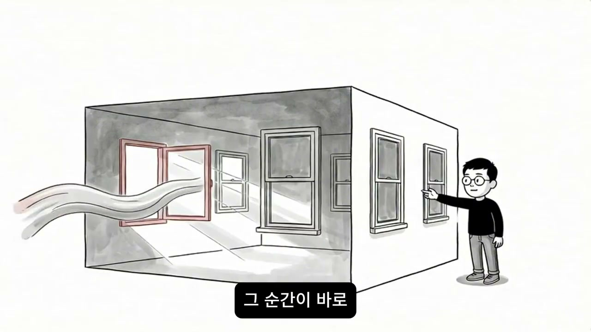
반대로 아주 짧게 속마음을 꺼냈을 때 몸이 가벼워진 경험을 소환한다. 중요한 것은 위로를 받았는지가 아니라, 감정이 언어로 바뀌어 바깥으로 나왔다는 사실 자체다.
이미지에는 환기가 되지 않던 방 비유에서 실제 창문이 열린 구조가 나온다. “감정의 창문이 열린 순간”을 건축 비유로 재확인한다.
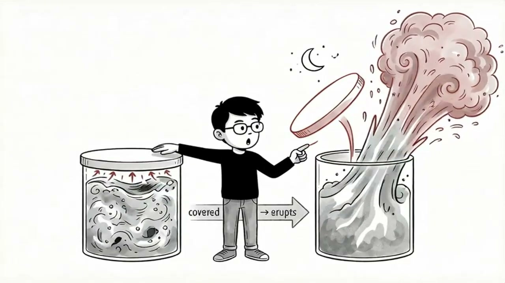
감정 신호가 언어화되면 전두엽이 처리 가능한 형식으로 받아들인다는 뇌과학 설명이 이어진다. “괜찮아요”는 감정 이름이 아니라 뚜껑이며, 뚜껑은 순간을 넘기지만 내부 끓음은 계속된다는 결론이다.
이미지에는 covered → erupts 전환, 덮인 용기와 분출 용기가 대비된다. 억제 문장과 실제 정서 상태의 불일치를 시각적으로 정교하게 보여준다.
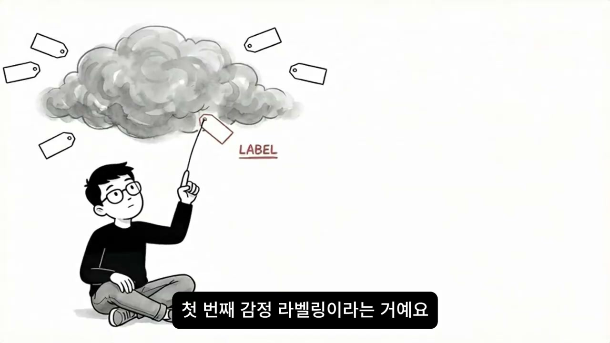
화자는 “당신이 조절을 못하는 게 아니라, 진짜 이름 붙일 기회가 없었다”고 재프레이밍하고 첫 번째 통로로 감정 라벨링을 제시한다. 방법은 단순하다: 혼자가 되는 순간 지금 감정을 딱 한 단어로 명명한다.
영상에서 제시된 감정 어휘는 서운함, 답답함, 외로움, 짜증, 허무함, 억울함, 지침이다. 이미지에서는 구름(막연한 감정) 주변에 빈 태그가 떠 있고, 인물이 태그를 연결하며 LABEL 텍스트가 보인다.
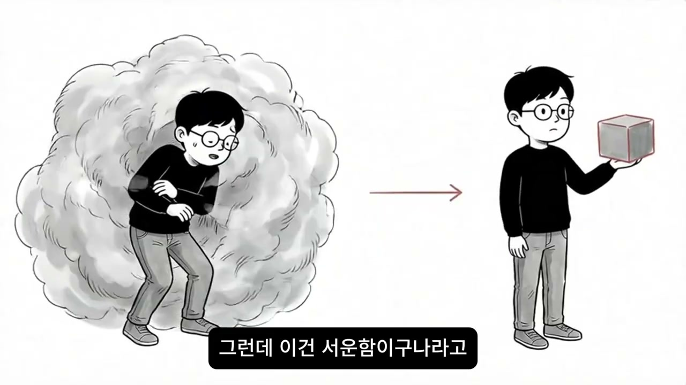
이름을 붙이면 편도체 활성화가 낮아지기 시작한다는 설명이 나온다. 소리내지 않아도 되고, 머릿속 명명만으로도 효과가 있으며, 처음에는 단어가 잘 안 떠오를 수 있다고 현실적인 난이도도 인정한다.
시각적으로는 흉곽 조임, 어깨 하중, 목 조임 같은 신체감각 → 태그 매핑이 그려진다. 감정어가 안 떠오를 때 몸 감각에서 역추적하라는 실전 팁을 도식으로 보여준다.
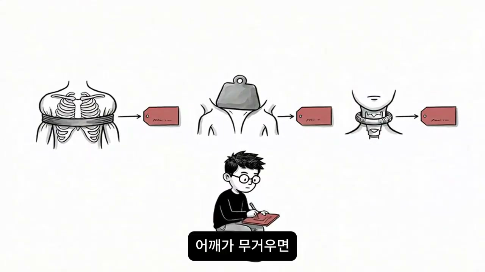
“평생 괜찮아로 덮어왔으니 몸에게 먼저 물어보라”는 조언이 핵심이다. 가슴 답답함은 억울함, 어깨 무거움은 과잉 책임감, 목 조임은 말하지 못한 무언가일 수 있다는 예시를 제시한다.
이미지에서는 안개에 둘러싸인 인물이 오른쪽에서 큐브(다룰 수 있는 물체)를 들고 서 있는 장면으로 전환된다. 이는 안개(막연함) → 물체(처리 가능성) 변환 비유다.
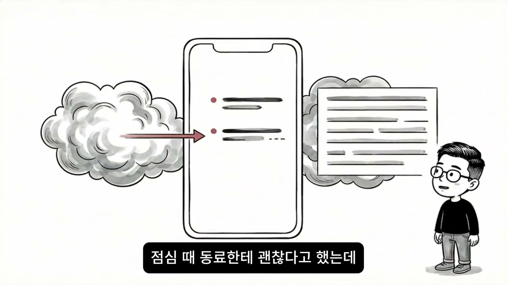
두 번째 방법은 머릿속 감정을 외부 매체로 내보내는 “외주화”다. 휴대폰 메모장에 “괜찮다고 말했지만 사실 괜찮지 않았던 순간”을 한 줄만 적으라고 제안한다(길게 쓸 필요 없음).
이미지에는 THE NEW WAY (FINITE)와 THE OLD WAY (INFINITE)가 대비되며, 스톱워치와 체크 표시가 보인다. 즉 무한 루프를 유한 프레임으로 바꾸는 것이 핵심임을 시각화한다.
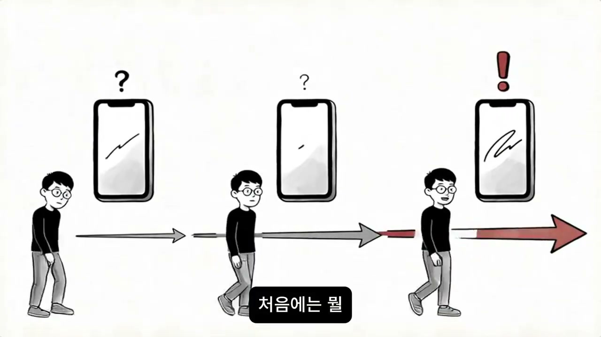
감정이 머릿속에만 있으면 실제 크기를 가늠하기 어렵고 굴러다니며 커지지만, 글자로 나오면 크기가 보인다고 설명한다. “아, 이게 이 정도였구나”라는 거리감이 생기는 순간이 중요한 전환점이다.
이미지는 구름 같은 정서 덩어리가 스마트폰의 짧은 불릿으로 변환되고, 옆 종이(텍스트화된 기록)로 이어진다. 추상 감정이 구조화된 정보로 바뀌는 장면이다.
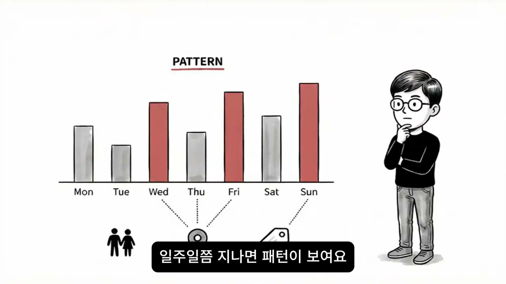
실천 시간축도 제시된다: 4일 정도 지나면 적는 속도가 빨라지고, “오늘은 이걸 적어야겠다”는 감각이 생긴다. 즉 감정이 올라올 때 자동으로 덮는 대신 포착하는 뇌 습관이 형성된다.
이미지에는 5 MIN 스톱워치와 쿠션을 안은 인물이 함께 배치되어, 감정을 허용하면서 버티는 짧은 실천 프레임을 시각적으로 준비시킨다.
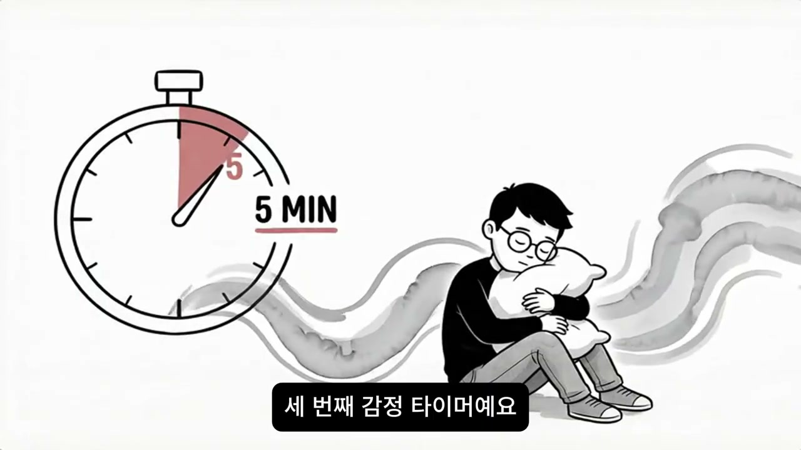
세 번째 방법은 밤 감정 파도 대응용 5분 타이머다. 문 닫고 감정이 밀려오면 타이머를 5분으로 맞추고, 그 시간엔 울어도 멍해도 베개를 껴안아도 된다고 허용한다.
이미지의 진행 도식은 물음표 상태에서 느낌표 상태로 이동하는 흐름을 보여준다. 이는 “무의식적 압도 → 의식적 인식”의 변화를 암시한다.
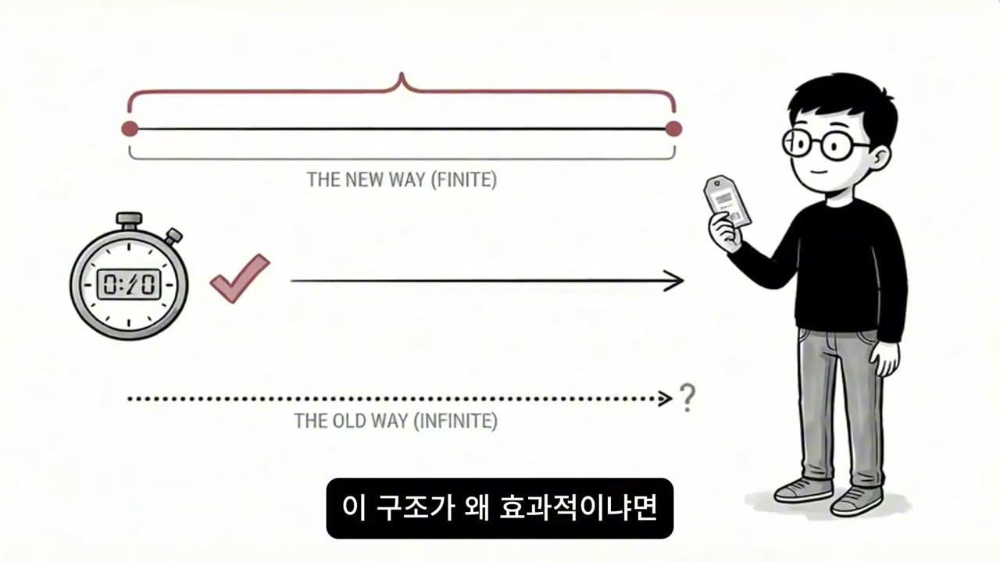
중요 규칙은 5분 후 반드시 한 단어 라벨링을 붙이는 것이다. 이 구조가 효과적인 이유를 화자는 “감정에 시간 프레임이 생기기 때문”이라 설명한다.
이미지에서는 PATTERN 막대그래프(Mon~Sun)가 나타나고, 특정 요일 막대가 강조되어 반복 패턴 관찰을 시사한다. 자각이 쌓이면 “언제/누구 앞에서/어떤 감정을 삼키는지”가 데이터화된다는 메시지와 연결된다.
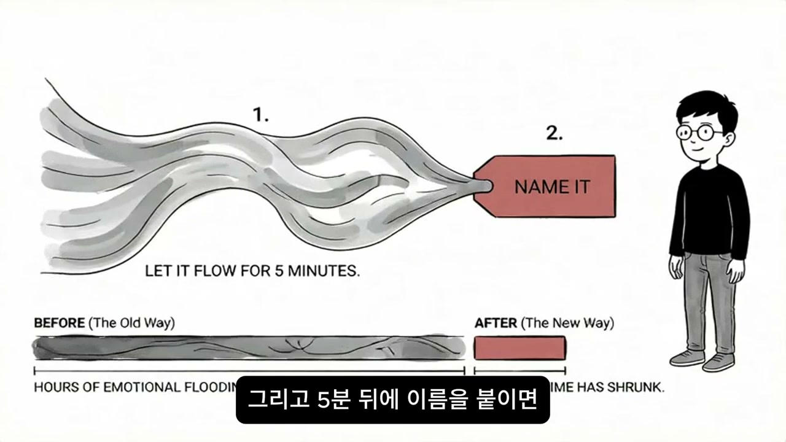
5분 틀이 생기면 뇌가 “한정된 시간의 경험”으로 처리하고, 끝이 보이기 때문에 견딜 수 있다고 말한다. 무한한 어둠은 무섭지만 “5분 뒤 불이 켜진다”는 예측 가능성은 버팀을 가능하게 만든다.
이미지에는 열린 문으로 바람이 흐르는 장면이 제시되어, 흘려보내기 + 이름 붙이기의 2단계를 “배출 통로 개방”으로 시각화한다.
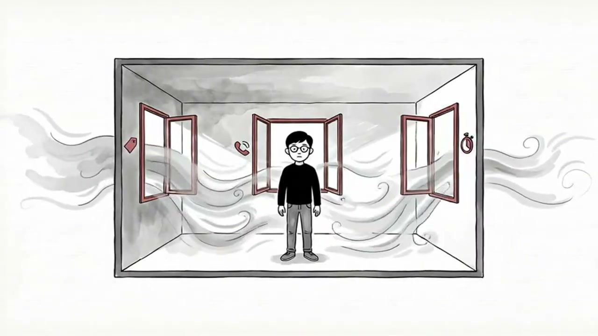
화자는 세 방법(라벨링·외주화·타이머)이 모두 같은 원리라고 정리한다: 감정을 없애는 게 아니라 갇히지 않게 흐르게 만든다. 통로가 생기면 감정은 쌓여 무거워지지 않고, 반복될수록 전두엽의 처리 경로가 강화된다.
이미지에는 영어 도식이 직접 나온다: 1) LET IT FLOW FOR 5 MINUTES 2) NAME IT, 그리고 BEFORE: HOURS OF EMOTIONAL FLOODING / AFTER: TIME HAS SHRUNK. 시간 단축 효과를 명시적으로 제시한다.
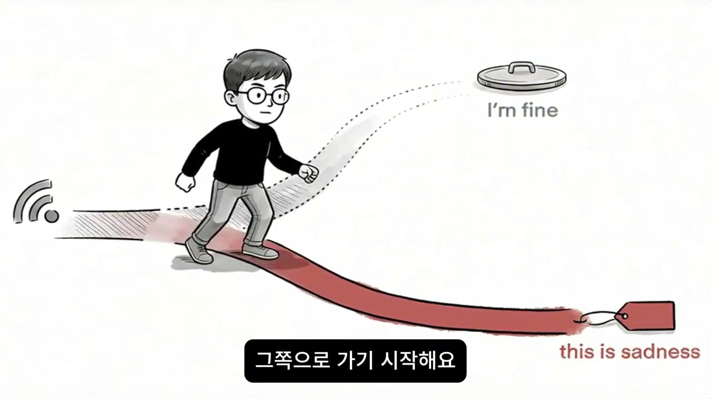
처음엔 의식적으로 이름을 붙여야 하지만, 반복하면 뇌가 자동으로 언어화하기 시작한다고 설명한다. 과거 자동반응이 “괜찮아요”였다면, 새로운 자동반응은 “이건 서운함이구나”가 될 수 있다는 주장이다.
이미지에서도 뚜껑(“I’m fine”) 경로 대신 빨간 라벨 경로(“this is sadness”)로 인물이 이동한다. 이는 자동 반응 경로 교체라는 신경가소성 비유다.
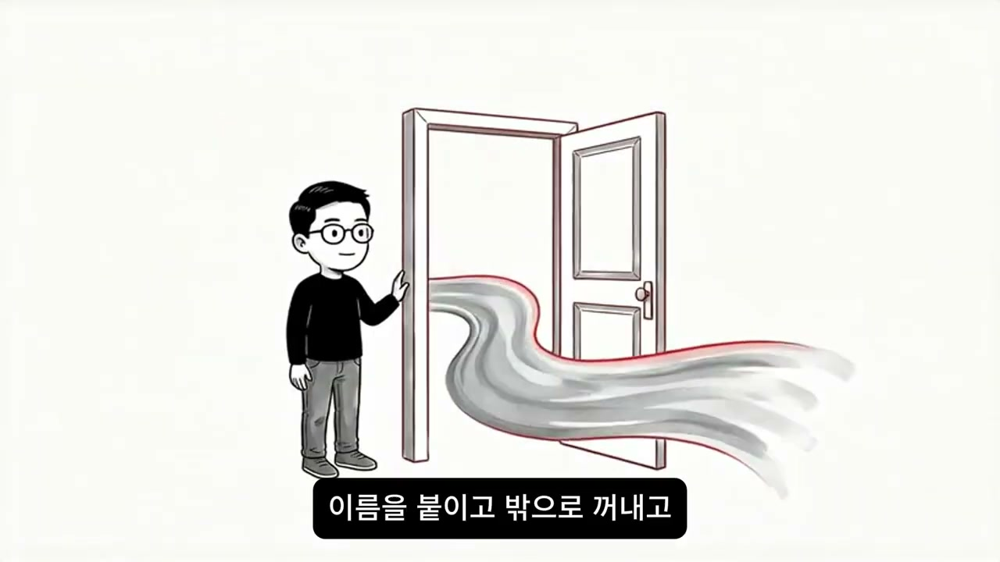
요약 메시지는 “예민함이 아니라 정밀함, 문제는 센서가 아니라 방법”이다. 감정을 참을수록 내부가 무거워지는 구조였고, 이름 붙이기·밖으로 꺼내기·시간 주기라는 작은 통로가 처리 방식을 바꾼다고 강조한다.
이미지에는 여러 창문이 열린 방에 공기가 순환하고, 창문 주변에 태그/전화/타이머 아이콘이 배치된다. 세 기법이 하나의 환기 시스템으로 통합되는 최종 비주얼이다.
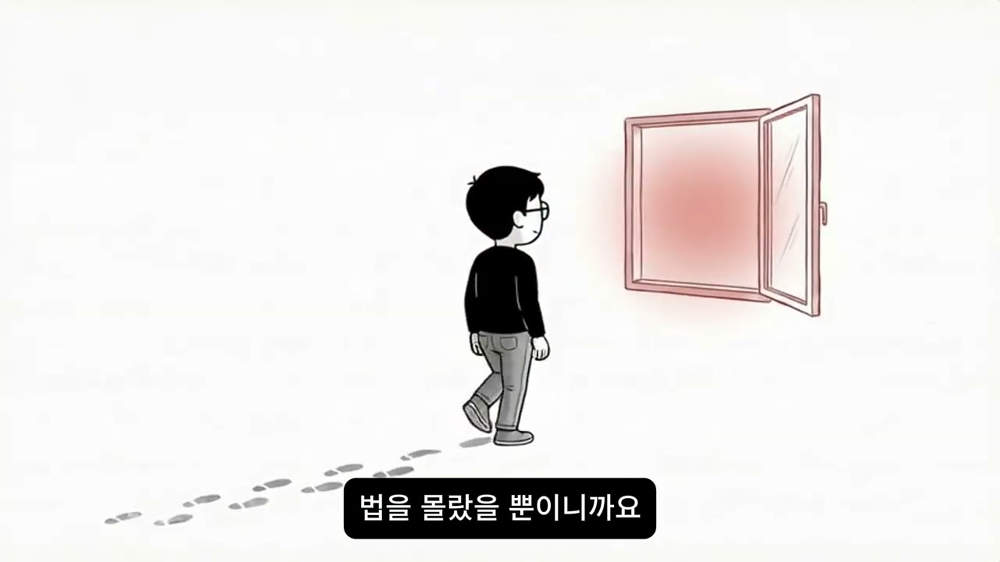
마지막 문장은 “지금 이 감정의 이름이 뭘까”다. 화자는 이것이 감정 뚜껑을 여는 가장 작은 손잡이라고 말하며, 뇌는 고장 난 것이 아니라 창문 여는 법을 몰랐을 뿐이라고 다시 확인한다.
이미지에서는 발자국을 남기며 열린 창문(붉게 빛나는 내부)으로 걸어가는 캐릭터가 나온다. 끝으로 본 영상은 뇌과학·심리학 기반 교양정보이며 의학적 진단/치료를 대체하지 않는다는 디스클레이머를 명시해 범위를 분명히 한다.
“괜찮아요라고 말했어요. 웃으면서요.”
“그런데 왜 지금 혼자가 되니까 눈물이 나는 걸까요?”
“괜찮아요는 감정의 이름이 아니라 감정의 뚜껑이에요.”
“감정은 처리되지 않으면 사라지지 않아요.”
“수신은 되는데 배출이 안 되는 구조예요.”
“감정 조절을 못 하는 게 아니에요. 하루 종일 너무 잘 조절했기 때문에 밤에 반동이 오는 거예요.”
“소리 내서 말할 필요도 없어요. 머릿속으로 떠올리는 것만으로도 효과가 있어요.”
“첫 번째 감정 라벨링, 두 번째 감정 외주화, 세 번째 감정 타이머.”
“휴대폰 타이머를 5분으로 맞추는 거예요.”
“이건 한정된 시간 안의 경험이다, 라고 뇌가 처리하기 시작해요.”
“처음에는 괜찮아요가 자동 반응이었지만, 반복되면 이건 서운함이구나가 자동 반응이 될 수 있어요.”
“당신이 예민한 게 아니라 정밀한 거였어요.”
“당신의 뇌는 고장 난 게 아니에요. 창문을 여는 법을 몰랐을 뿐이에요.”
“지금 이 감정의 이름이 뭘까.”
이 영상의 핵심 메시지는 단순하다. “밖에서 멀쩡하고 집에서 무너지는 나”는 성격 결함이 아니라 고감도 수신 + 지연 처리 + 억제 반동의 조합으로 설명할 수 있다는 것이다.
실용적 시사점은 세 가지다. 첫째, 감정은 ‘없애는 대상’이 아니라 ‘통과시키는 신호’로 다뤄야 한다. 둘째, 처리의 단위는 거창한 통찰이 아니라 한 단어, 한 줄, 5분처럼 작아야 지속된다. 셋째, 4일·1주 같은 짧은 반복만으로도 자기 패턴이 드러나고 선택 가능성이 생긴다.
향후 전망(영상 내부 논리 기준)도 명확하다. 이 루틴이 반복되면 전두엽-언어 기반 처리 경로가 강화되어, 자동반응이 “덮기”에서 “명명하기”로 이동할 수 있다. 즉 감정에 휩쓸리는 시간이 줄고, 관계 속 표현 정확도와 자기회복 속도가 함께 개선될 가능성이 높다는 결론이다.
댓글
GitHub 이슈 기반 댓글 시스템입니다.